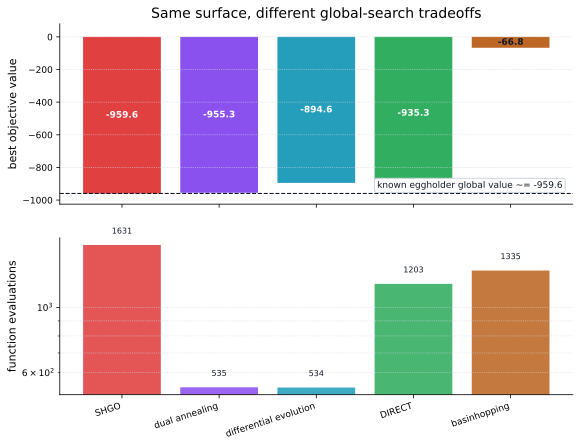
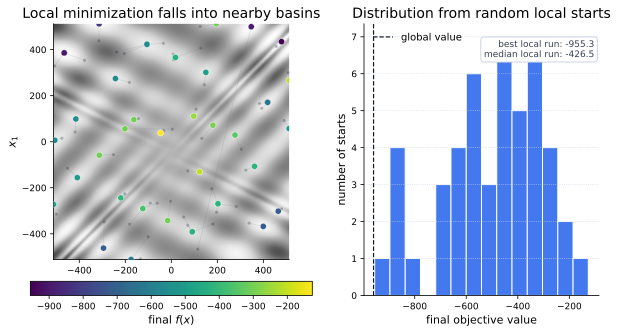

Core Idea
A local optimizer tries to improve from one starting point. A global optimizer treats the bounded search space as part of the problem:
The goal is not just stationarity. A global solution should beat all other feasible points:
Eggholder Landscape
The SciPy tutorial demonstrates global optimization on the eggholder function, a bounded two-dimensional surface with many deceptive valleys:

Optimizer Families
SciPy's global optimizers cover several search styles. The right choice depends on whether you need deterministic coverage, population search, stochastic jumps, or a local-minimizer wrapper.
| Method | Search style | Good fit |
|---|---|---|
shgo |
Simplicial homology global optimization | Deterministic bounded search and local-minima discovery. |
differential_evolution |
Population evolution | Black-box bounded objectives with rough or discontinuous structure. |
dual_annealing |
Generalized simulated annealing plus local search | Escaping local basins with a stochastic temperature schedule. |
direct |
Deterministic rectangle partitioning | Low-dimensional bounded searches where systematic subdivision helps. |
basinhopping |
Random perturbations around a local minimizer | Problems where local minimization is cheap and basin hopping is meaningful. |

Why Local Search Is Not Enough
A local method can satisfy first-order optimality inside a poor valley. On a many-basin surface, the starting point can matter more than the local solver:

Using SciPy
The global optimizers live in scipy.optimize. Most need
finite bounds, and several can polish the best point with a local
minimizer.
import numpy as np
from scipy import optimize
def eggholder(x):
return (
-(x[1] + 47) * np.sin(np.sqrt(abs(x[0] / 2 + x[1] + 47)))
- x[0] * np.sin(np.sqrt(abs(x[0] - (x[1] + 47))))
)
bounds = [(-512, 512), (-512, 512)]
results = {
"shgo": optimize.shgo(eggholder, bounds, n=96, iters=2, sampling_method="sobol"),
"dual_annealing": optimize.dual_annealing(eggholder, bounds, seed=2),
"differential_evolution": optimize.differential_evolution(eggholder, bounds, seed=1),
"direct": optimize.direct(eggholder, bounds),
"basinhopping": optimize.basinhopping(
eggholder,
x0=np.array([0.0, 0.0]),
minimizer_kwargs={"method": "L-BFGS-B", "bounds": bounds},
seed=4,
),
}
for name, result in results.items():
print(name, result.fun, result.x)When To Use It
| Use global optimization when | Prefer local optimization when |
|---|---|
| The objective is bounded and has many plausible local minima. | The surface is smooth, convex-like, or already near a good basin. |
| Function evaluations are expensive but a wrong basin is even more expensive. | You need fast refinement after a good initial point is known. |
| You can afford multiple searches, stochastic seeds, or deterministic space coverage. | The dimension is high enough that broad space exploration becomes impractical. |